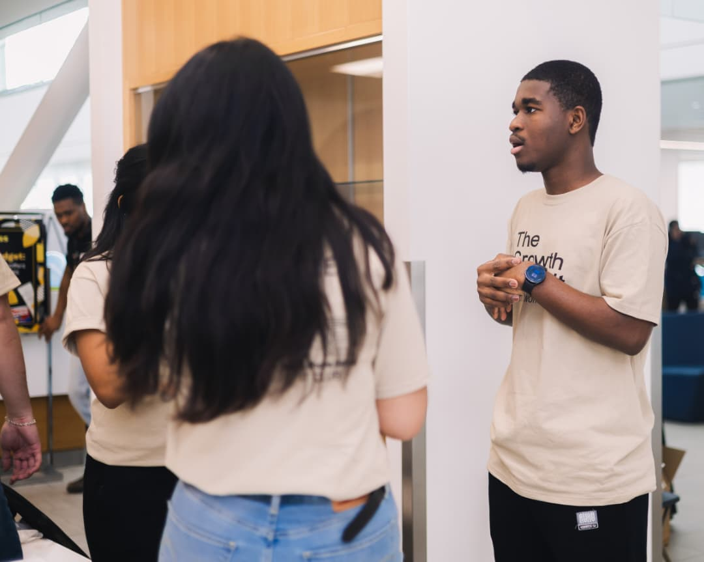
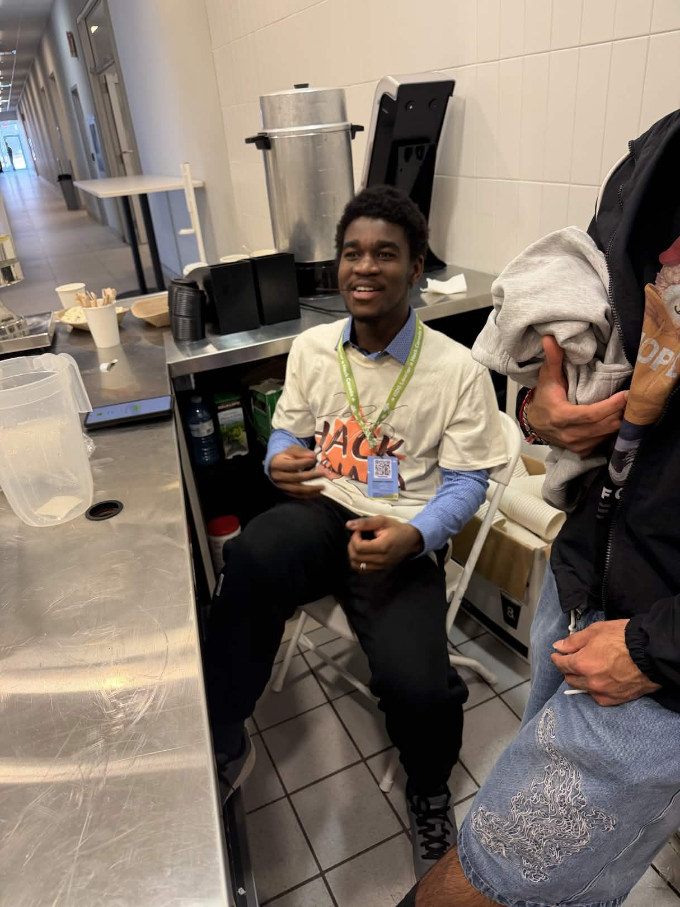
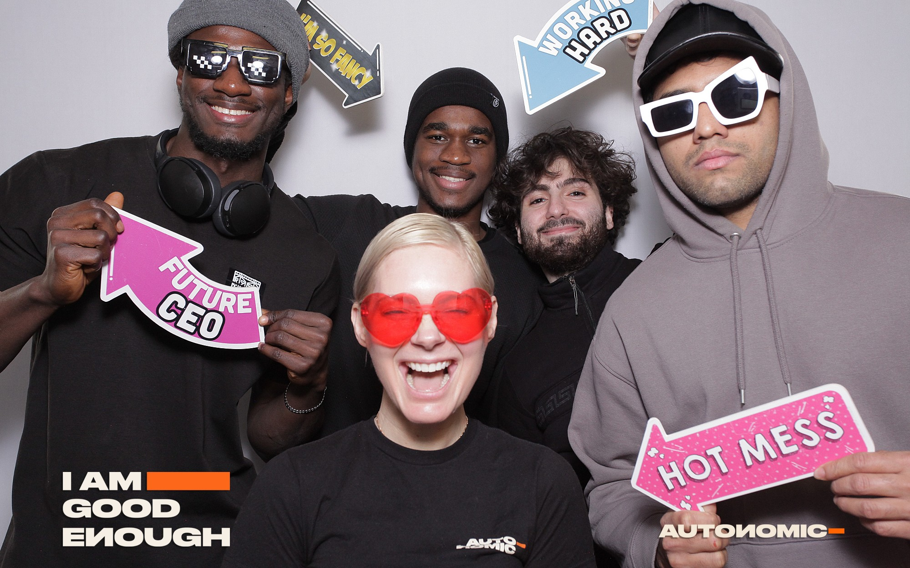
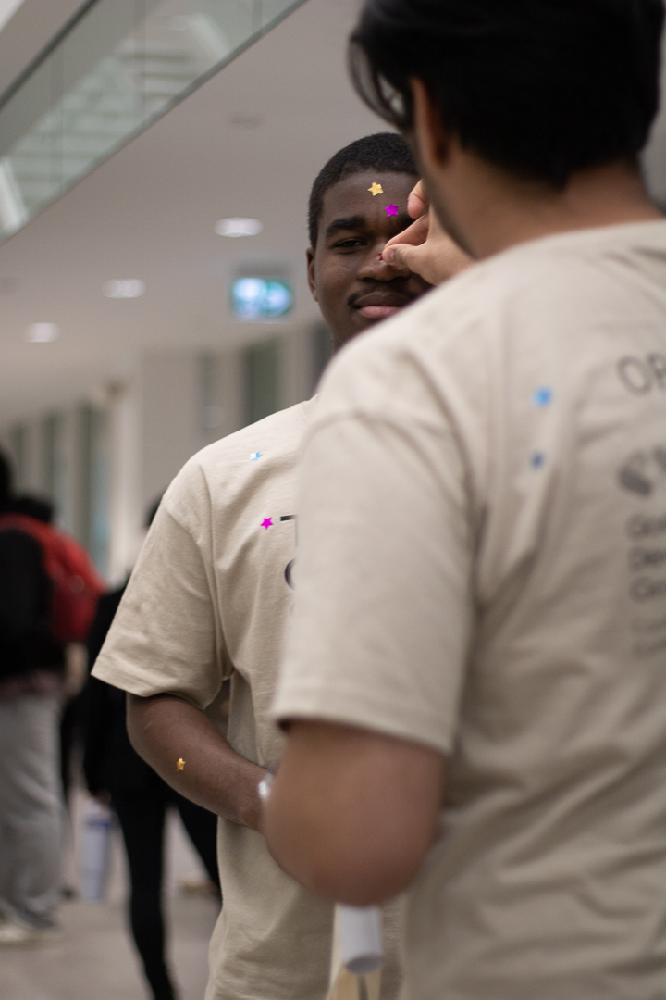
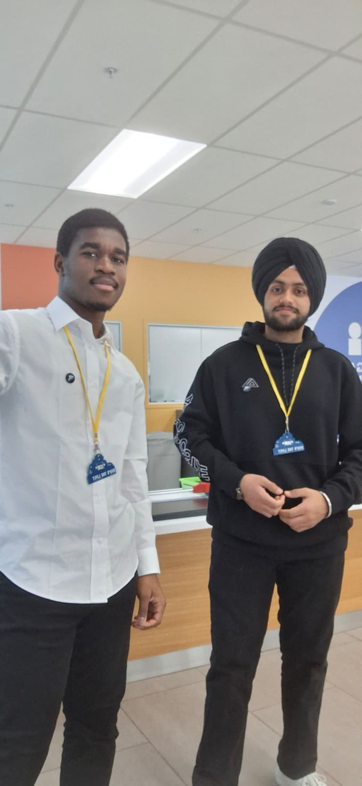

Computer Science + Software Development
Ishaq Nasiru
I build practical products across software, AI, mobile, and embedded systems, with enough personality to make the work memorable.
- Focus
- Useful, human-centered technology
- Current waters
- AI, IoT, mobile, and full-stack systems
- Based in
- Waterloo, Ontario
Captain's Log
Curious by default. Practical on purpose.
I study Computer Science at Conestoga College and enjoy building across the boundary between software and the physical world. My strongest work turns a real problem into a clear system: understand it, prototype it, test it, and keep improving.

Selected Work
Projects with real depth.
Hardware, software, and AI projects chosen for their technical range, problem-solving, and finished-product thinking.
More Work
Additional projects
Professional Experience
Work beyond the classroom.
Formal roles are kept separate from hackathons, projects, and community work.
Collected Pieces
Tools I use and keep learning.
Hover or focus a piece for context. These are technologies used in projects, coursework, and active exploration.
Community
Learning, leading, and showing up.
Club leadership, volunteering, and hackathon participation, clearly separated from professional experience.
Field Notes
A few moments off the commit history.
Community rooms, build days, and the people who make technology worth doing.





Playable Bit
Take the Golden Sunny out.
Collect the tech stack, dodge the rocks, and see how much you can gather before the clock runs out.
Ready when you are.
Resume
The one-page version.
Education, experience, projects, and technical skills in recruiter-friendly form.
Open Resume